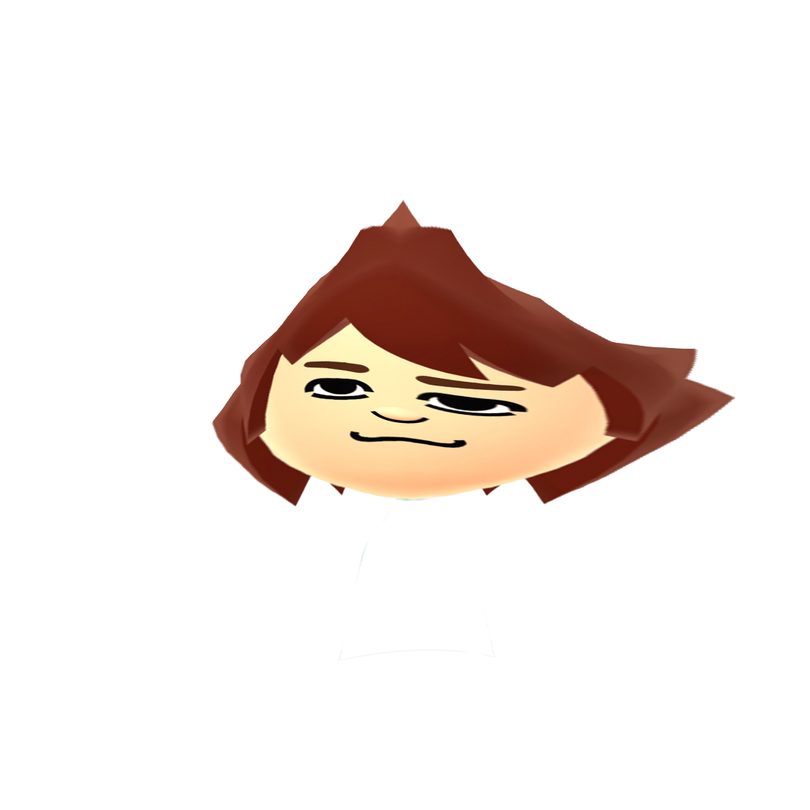
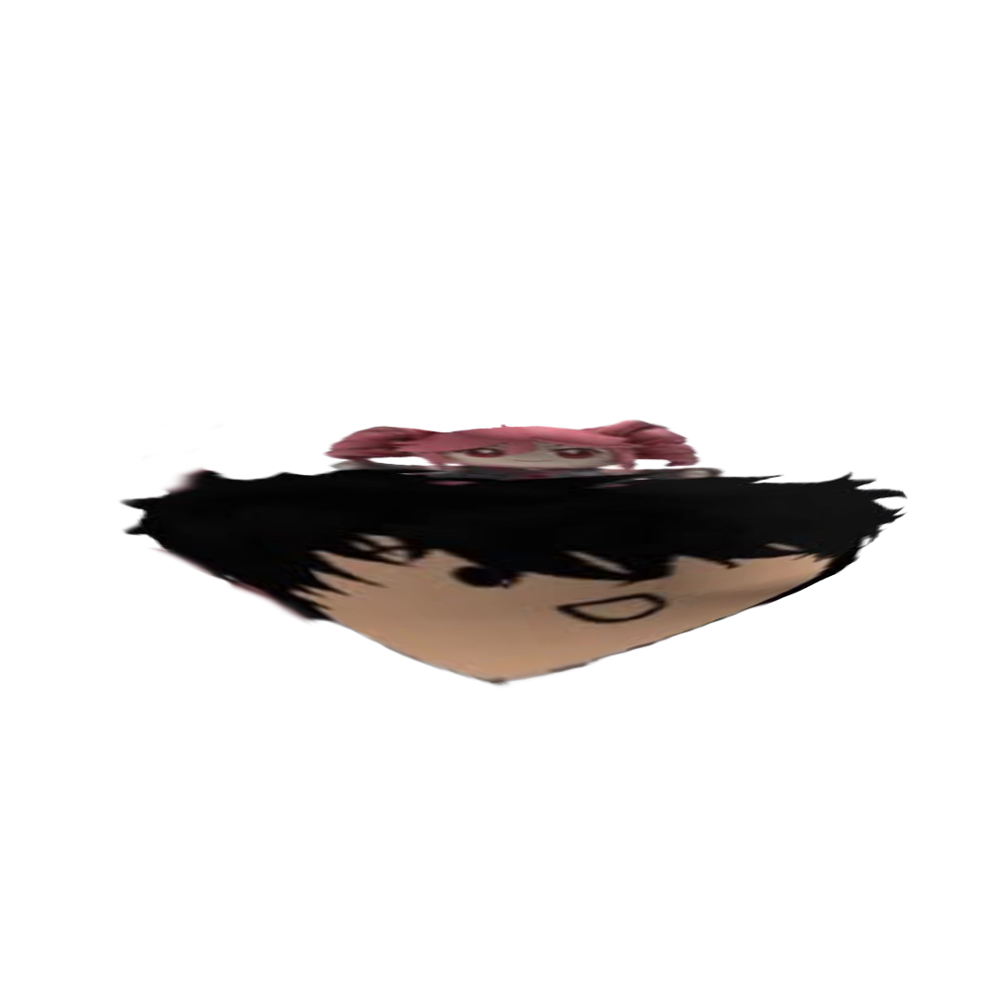
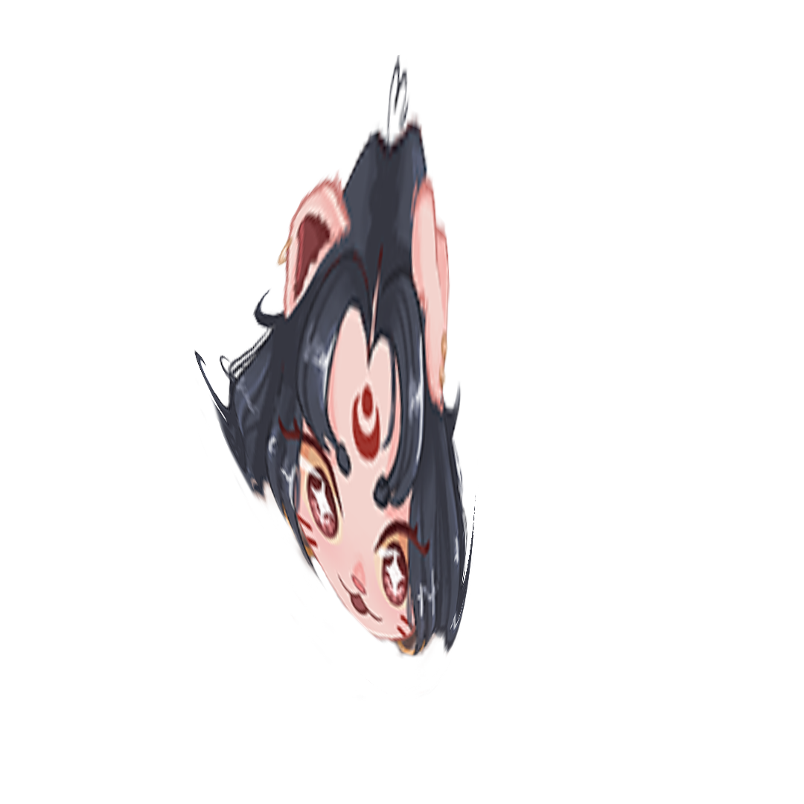
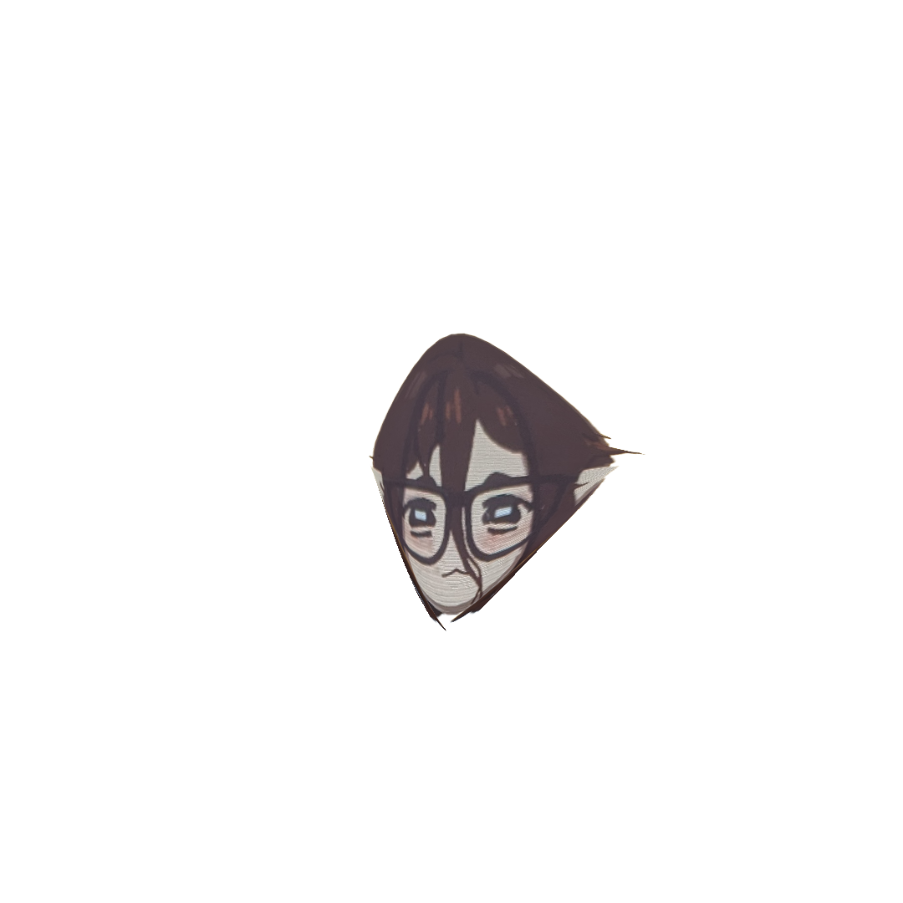
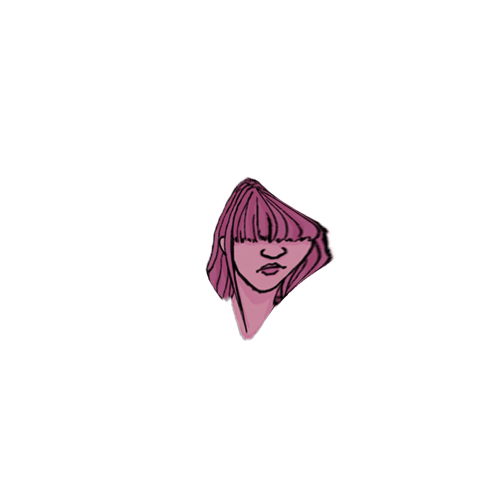

user: cj
miis are a bit limiting so i dont think it really looks like me but i think its as close as itll get
user: jordan
I put a bunch of stuff i like from other media onto a guy. thats really mainly it.
user: chai
i love y2k fashion and as a fat person its harder to dress the way i wanna so its easier to dress up my lil doll
user: sophie
I wanted her to look like a chibi version of me
user: nicole
I use them as an outlet to represent things I’ve encountered in life.